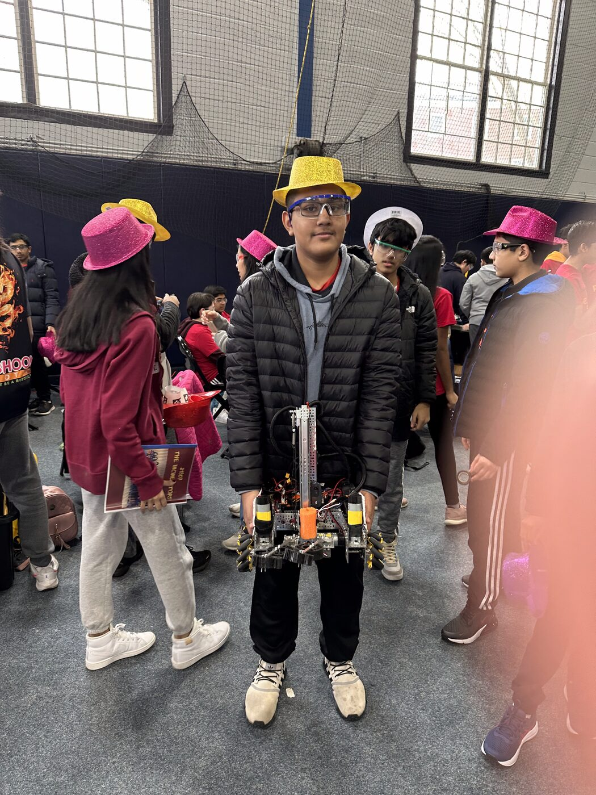
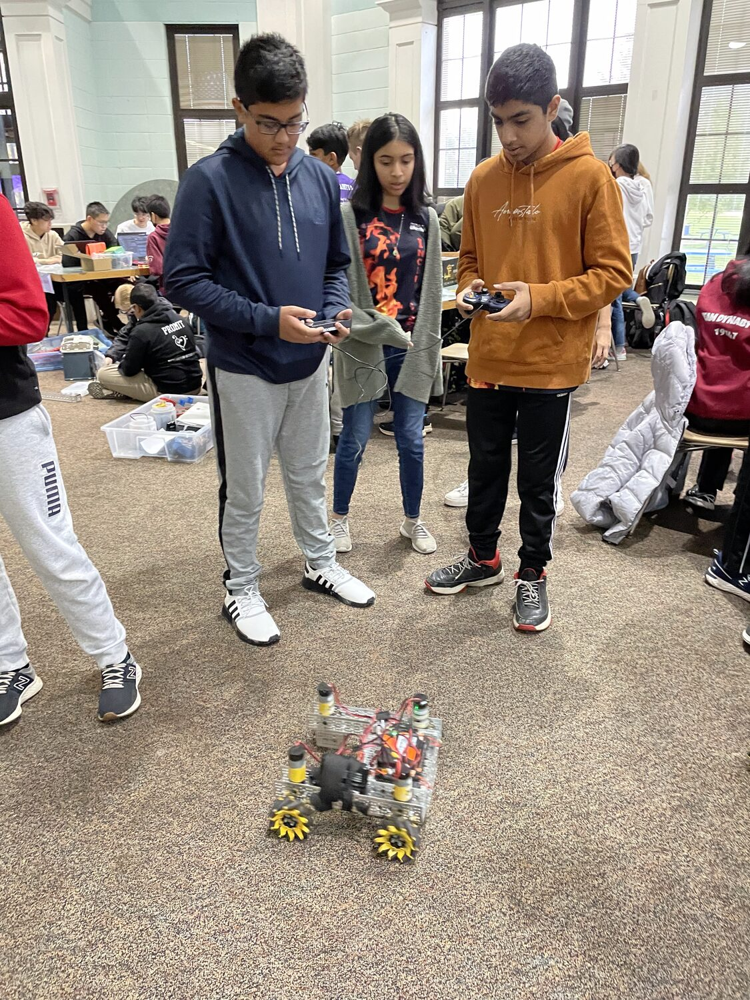
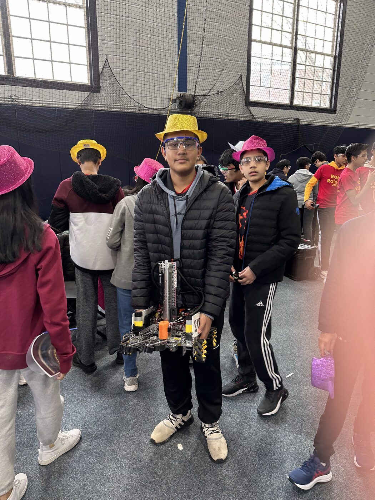

2023 Central Conference Finalist·2024 Motivate Award, 2nd Place



Shrenik with the team robot at an FTC competition.
I joined FIRST Tech Challenge in 2021 and competed with The Incinerators, Team 21807, for
three seasons. As captain in 2023 and 2024, I led an approximately 18-person team through robot development,
competition, fundraising, and outreach.
Led autonomous and teleoperated software in Java: path following, localization, camera vision,
sensor automation, and low-latency control
Built closed-loop autonomous motion using spline trajectories, sensor fusion, and motion profiling
Designed and iterated turret-shooter and intake systems using CAD, 3D printing, and waterjet cutting
Directed match strategy, technical presentations, fundraising, and outreach; helped support
50+ FTC/FLL teams
A generated test, graded, including the one it got wrong.
User tested with 10 friends.
Practice is what fixes test anxiety, but practice questions come from somewhere else: a generic
question bank, or a tutor most families can’t afford. Neither knows what your teacher assigned. Testify
generates tests from a student’s own uploaded materials, so the questions can only come from what they
actually have to study.
Working web application, end to end: upload → embed → retrieve → generate → sit
→ grade
Written answers are read and scored, not string-matched against a key
Chunks under 100 characters are skipped rather than turned into a weak question
Tried informally by 10 friends. Question quality and grading accuracy were never
measured.
Full case study: the retrieval pipeline and its limits →
Why it mattersThe gap isn’t practice material, it’s practice material that matches
what your teacher actually assigned. That alignment is exactly what a private tutor sells and a generic question
bank cannot give, which makes it a question of who can afford it.What I took from it:
Retrieval quality is a fairness property, not only a technical one. Thin notes make thin
questions, and the students with the thinnest notes need the most help.
Beginning a real-world GuideLight demonstration at Dunkin’.
Indoor navigation remains a major gap in independent travel for blind and low-vision people.
A white cane helps detect nearby obstacles, but it cannot identify a classroom, doorway, ordering counter, or
route through an unfamiliar building. I built GuideLight to turn an iPhone into a calm, voice-first indoor
guide that gives turn-by-turn directions to a chosen destination. Haptic cues support both blind and partially
sighted users, while configurable high-contrast visuals and touch controls provide additional options for
people with usable vision.
Novel Analysis of Post-COVID Hub Performance in the US
2025–2026 Semifinalist, Columbia Junior Science Journal
Green where recovering airports outnumber declining ones.
After COVID, I noticed that some small airports seemed busier than before. I wanted to know if
this was happening across the country, so I analyzed 16 years of federal passenger records from 1,038 U.S.
airports. I compared traffic before and after the shutdown years and found that small hubs grew much faster
than major hubs.
Six signs in the sentence; the detector returned eight.
In progress.
Sign language is not gesture. It has grammar, and meaning lives in movement over time, not in
any single frame. I fine-tuned a video transformer to read it and found out that the model is never the hard
part.
11,980 clips catalogued against a 2,000-word vocabulary; the median word has 6
examples and only 104 words reach ten
Auto-trimming to the moment hands are signing cut HELLO from 100 frames to 45. More than half of a
typical clip isn’t signing, and the model only ever sees 24
Five iterations of a sentence-segmentation algorithm; over-segmentation is the failure mode that persists
The 2,000-word model does not exist. The 10-word run was no better than guessing.
Full case study: the data, and the unsolved part →
Why it mattersRoughly a million deaf and hard-of-hearing American adults use sign
language, and certified interpreters are in documented short supply, so access often depends on whether
one happens to be available.What I took from it: The model was never the
bottleneck. Six video examples per word is the bottleneck, and no amount of architecture fixes a data
problem.
Smart Cart
2024–2025Process & throughput
No photo yet
Prototype built, in progress.
A shopping cart that tallies items as you go, moving checkout out of the queue and into the
aisle. Onboard sensing and item recognition on Arduino, aimed at the smaller retailers who can’t buy
enterprise automation.
Built and working, but never measured for recognition accuracy or throughput.
Why it mattersCheckout automation already exists, but it is priced for chains with
capital budgets. The interesting constraint is whether the same throughput gain survives on hobbyist hardware
and a student budget.What I took from it: Moving a queue is a layout problem
before it is a sensing problem.